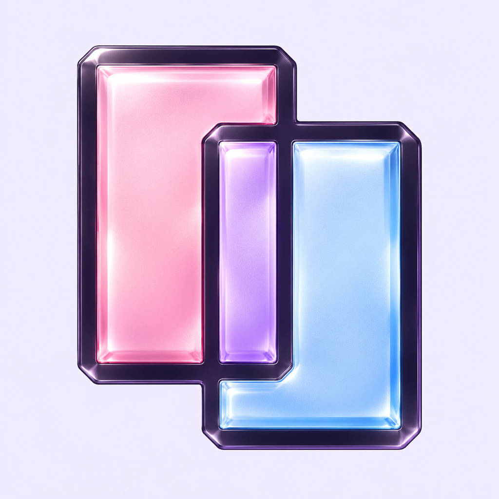

Make yourself
comfortable.
Choose Classic or Bound screen layouts. Adjust your touch controls, choose a theme and keep native controller support close at hand.
YOUR NEXT LITTLE ADVENTURE
A familiar way to play. A new way to make it yours.
Bound brings your games, personal controls and a window into a friend’s adventure together on iPhone.
In development · App Store release not yet available

YOUR OWN LITTLE WORLD.
A PLACE FOR THE WAY YOU PLAY
Choose Classic or Bound screen layouts. Adjust your touch controls, choose a theme and keep native controller support close at hand.
Keep your progress with native saves and save states. Jot down a reminder in per-game notes that stay on your device.
Connect an existing Bound account to share game video with a friend. You each play independently while watching the other’s screen.
BRING YOUR OWN ADVENTURE
Import compatible game files you have permission to use. Local gameplay needs no Bound account. Friend sharing is optional and requires an internet connection.
Bound includes no games or game downloads. Built on the Delta foundation.